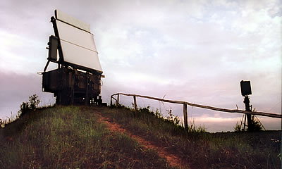
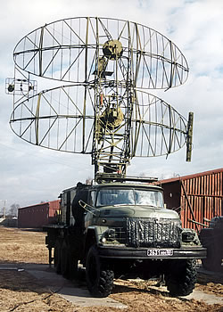
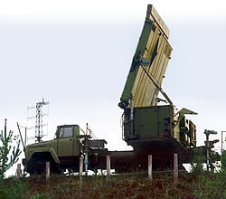
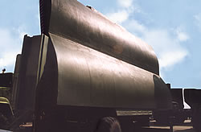

Современная радиолокация


В условиЯх острого дефицита ассигнований на развитие вооружения, резкого сокращения Вооруженных Сил прежние видовые (ПВО страны, ВВС, ПВО СВ, ВМФ, ЕСОрВД) замыслы и взгляды на развитие радиолокационных систем, во многом определившие нынешний облик РЛС, практически не могут быть реализованы и требуют определенной корректировки. Помимо этого, разработанные образцы РЛС с высокими ТТХ по экономическим причинам не могут быть освоены в массовом серийном производстве. В настоящее время они выпускаются единичными экземплярами.
Состоящие на вооружении средства устаревают физически и выходят из строя, исчерпав сроки эксплуатации. Они уже не могут быть в достаточной мере заменены, поскольку ни темпы фирменного (капитального) ремонта, ни темпы поставок новых радиолокационных систем не соответствуют минимально потребному уровню.
Используемые в боевом составе группировок войск РЛС боевого режима разработки 1970-х гг., современным требованиям по помехозащищенности не удовлетворяют. РЛС дежурного режима громоздки, затраты на эксплуатацию велики, элементная база для их поддержания в боевом состоянии отсутствует.
Анализ ситуации, сложившейся на рынке средств радиолокации, показывает, что в условиях незначительного объема финансирования государственного оборонного заказа на проведение НИОКР и серийное производство, невозможно дальнейшее эффективное функционирование предприятий радиолокационного профиля просто как хозяйствующих субъектов.
Единое информационное поле
Для решения задач по обеспечению безопасности страны в воздушно-космическом пространстве в системе ВКО РФ должна быть создана единая система разведки и предупреждения о воздушно-космическом нападении, формирующая единое информационное поле (ЕИП). Основным назначением ЕИП системы ВКО является информационное обеспечение в реальном масштабе времени органов военного управления силами ВКО РФ.
Главными задачами ЕИП являются установление факта воздушно-космического нападения, определение государства агрессора, оценка степени опасности воздушно-космических ударов, информационное обеспечение боевого применения сил и средств ВКО.
ЕИП системы ВКО РФ должна обеспечить своевременность, полноту и упорядоченность поступления информации при рациональном соотношении между затратами на создание ЕИП и его вкладом в эффективность ВКО РФ.
Своевременность поступления информации достигается формированием ЕИП начиная с дальних подступов к государственной границе и полной автоматизацией процессов добывания, сбора и обработки информации.
Полнота информации обеспечивается выбором разнородных систем и средств разведки с соответствующими характеристиками.
Упорядоченность предполагает систематизацию всех информационных ресурсов ЕИП и их рациональное распределение по различным уровням управления силами и средствами ВКО РФ.
Снижение затрат на формирование ЕИП может быть достигнуто использованием систем и средств, дающих наибольший удельный вклад в эффективность информационного обеспечения сил и средств ВКО РФ на единицу суммарных затрат по всем этапам жизненного цикла этих систем и средств.
Радиолокационные средства и системы Вооруженных Сил Российской Федерации и Министерства транспорта РФ играют ключевую роль в решении важнейших задач как в области обеспечения обороны страны и безопасности государства, так и в области развития народно-хозяйственного комплекса России.
На современном этапе основным направлением развития ведомственных радиолокационных средств и систем является последовательная их интеграция в единую автоматизированную радиолокационную систему в рамках федеральной системы разведки и контроля воздушного пространства Российской Федерации.
Работы по интеграции радиолокационных средств и систем Минобороны и Минтранса начались в конце 1980-х гг. Расчеты показали, что интеграция радиолокационных систем обеспечивает повышение эффективности боевых действий частей видов ВС и эффективности РЛ обеспечения УВД. При этом значительно возрастает качество контроля за порядком использования воздушного пространства.
Аналогичные работы проводились в США в рамках Объединенной системы надзора – US JSS (The Joint Surveillance System).
Реалии сегодняшнего дня
Общая площадь территории России составляет 17,1 млн. кв. км. Для обеспечения надежного радиолокационного контроля над такой территорией необходимо порядка тысячи подразделений РТВ ВВС (в традиционном понимании технической оснащенности и системы АСУ). ВС СССР, кстати, примерно таким количеством подразделений РТВ ПВО и обладали.
В результате организационно-штатных мероприятий, которые были проведены в 1990-х гг., количество подразделений уменьшилось в несколько раз. Площадь радиолокационно-контролируемых участков страны также сократилась, особенно на малых высотах.
Учитывая, что радиолокационные позиции Минтранса России круглосуточно создают радиолокационное поле над территорией страны в диапазоне высот от 3 до 20 тыс. метров, некоторые специалисты предлагают интегрированную радиолокационную систему мирного времени строить именно на базе этих позиций. При этом информацию о воздушных объектах получать посредством использования средств вторичной радиолокации.
Здесь, на мой взгляд, важно понять, какие утверждения по идеологии построения интегрированной радиолокационной системы (в нашем понимании Единого информационного поля) справедливы сегодня и будут обоснованны в обозримом будущем.
Задачи контроля воздушного пространства (в том числе в мирное время), нельзя решить только применением средств вторичной радиолокации и всей радиолокационной системой ЕС ОрВД. Об этом красноречиво говорят задачи, решать которые призваны радиотехнические войска ВВС.
Полагаю, нет необходимости перечислять их в полном объеме. Должен заметить, что их эффективное решение возможно за счет комплексного применения в радиолокационной системе средств первичной и вторичной радиолокации. Причем подавляющее большинство задач принципиально не может быть решено без использования средств первичной радиолокации, так как получение информации средствами вторичной локации зависит от оснащенности воздушных объектов бортовыми ответчиками.
Более того, имеются определенные типы ВО, которые изначально не оборудуются бортовыми ответчиками (крылатые ракеты различных классов, автоматические дрейфующие аэростаты, беспилотные летательные аппараты, большинство легкомоторной авиации и др.). Возможно и преднамеренное отключение бортовых ответчиков (при решении разведывательных и иных задач).
Наглядным примером того, что выполнять задачи контроля воздушного пространства необходимо, прежде всего, средствами первичной радиолокации является несанкционированный пролет и посадка в Москве в 1987 г. легкомоторного самолета. Самолет не обнаруживался средствами вторичной локации, но наблюдался дежурными первичными радиолокационными средствами ПВО. При должной распорядительности органов боевого управления ПВО нарушение воздушного пространства было бы пресечено.
В современных условиях проблемы эффективного контроля воздушного пространства первичными РЛС многократно возросли. Об этом красноречиво свидетельствуют недавние факты воздушного терроризма и несанкционированного использования воздушного пространства. В частности, только 9 мая 2005 г. Командованием специального назначения было пресечено 7 случаев несанкционированного использования воздушного пространства маловысотными летательными аппаратами в районе г. Москвы.
Последний факт особенно настораживает. В последние годы многократно увеличился и продолжает развиваться парк частных летательных аппаратов (самолеты, вертолеты, мотодельтапланы и пр.), владельцы которых нередко бесконтрольно используют воздушное пространство на высотах до 3 тыс. метров. В столице и других крупных центрах России поставлен вопрос о создании системы воздушных такси, организации массовых коммерческих перевозок. Это требует создания надежной системы радиолокационного контроля воздушного пространства российских городов.
Всероссийский НИИ радиотехники в целях информационного обеспечения безопасности жизнедеятельности инфрастуктуры и населения Москвы, других крупных административных и промышленных центров, объектов энергетики, атомной и химической промышленности при любой деятельности в их воздушном пространстве разработал предложения по созданию системы информации и защиты воздушного пространства над Москвой и Московским регионом от воздушного терроризма в мирное время на базе разработанных первичных РЛС.
На основе перспективных и серийно-выпускаемых РЛС типа "Гамма", "Фуркэ", "Панцирь" для данной системы предлагается разработка радиолокационного комплекса с твердотельной активной фазированной антенной решеткой (АФАР) с двумерным сканированием. В сложных целевых и помеховых условиях мегаполиса применение РЛК с АФАР с двумерным сканированием является предпочтительным и с точки зрения высоких экологических требований.
В различных вариантах построения РЛК с АФАР будут использованы последние достижения в области радиолокации, СВЧ-твердотельной и цифровой электронной элементной базы и освоенной во ВНИИРТе технологии разработки большеразмерных полосковых СВЧ делителей-сумматоров. Решена задача оптимального распределения ресурса между различными модулями РЛК (радиолокационным, телевизионным, инфракрасным, лазерным), разработаны алгоритмы взаимодействия этих модулей и систем обработки информации.
Что касается информации средств вторичной радиолокации, то она может и должна рассматриваться как дополнительная. С одной стороны, это повысит информационные возможности систем информации и защиты воздушного пространства, с другой – обеспечит условия для выполнения этими подразделениями задач в интересах ЕС ОрВД (в рамках Федеральной системы разведки и контроля воздушного пространства как системы двойного назначения).
Создание комплексированных вторичных радиолокаторов (КВРЛ), обеспечивающих работу в режимах международной и отечественной систем вторичной радиолокации RBS, УВД (УВД-М), отечественной и зарубежной систем опознавания, осуществляется в автономном и встраиваемом в первичную РЛС вариантах.
Это позволяет:
повысить дальность обнаружения воздушных объектов с ответчиками по сравнению с дальностью обнаружения первичных РЛС;
получать информацию о высоте полета ВО с ответчиками с дискретностью 10-30 метров;
классифицировать зарубежные самолеты по принципу "военный-гражданский", определять тип самолета, устанавливать государственную принадлежность за счет получения информации о номерах военных самолетов;
повысить достоверность отождествления диспетчерской информации, поступающей от органов ЕС ОрВД с радиолокационной информацией от радиотехнических подразделений, среднее время принятия решения по отождествлению;
при привлечении автономных КВРЛ для решения задач по радиолокационному обеспечению полетов и перелетов своей авиации, в том числе литерных самолетов обеспечить снижение общих затрат на несение боевого дежурства радиотехническими подразделениями и экономию ресурса первичных РЛС.
Воздушное пространство страны – зона повышенного риска и источник повышенной опасности (примеров авиационных аварий, полагаю, вполне достаточно). В современных условиях появились проблемы терроризма и несанкционированного использования воздушного пространства.
В настоящее время боевые возможности средств воздушного нападения вероятных противников для поражения объектов инфраструктуры страны, а также воздушных судов, используемых для проведения террористических актов, существенно возросли. При этом в силу особенностей обнаружения и воздействия по ним, наибольшие проблемы для обороняющихся сторон возникают при действии воздушных объектов на малых и предельно малых высотах. Наиболее опасными из этих объектов являются стратегические крылатые ракеты, а также маловысотные летательные аппараты, используемые экстремистами для совершения террористических актов.
Таким образом, главным источником объективной (независимой) радиолокационной информации о летательных аппаратах являются средства первичной радиолокации.
Средства вторичной радиолокации позволяют повысить информационные возможности радиотехнических подразделений (для ЕС ОрВД – главные) и являются источниками субъективной (зависимой) радиолокационной информации о лояльных воздушных объектах, использующих бортовые ответчики.

РЛС "Каста-2" первого этапа предназначалась для замены устаревших дежурных РЛС обнаружения низколетящих целей П-15 и П-19.
Фото: Георгий ДАНИЛОВ
В 1990-х гг. ИКАО приняла Концепцию, а затем и Глобальный план CNS/ATM (Communication, Navigation, Surveillance/Air Traffic Management) которые предусматривают:
переход к автоматическому зависимому наблюдению (ADS – Аutomatic Depended Surveillance зависимое наблюдение по запросу воздушного обзорного радиолокатора; ADS-В – беззапросное зависимое наблюдение) на основе самоопределения положения летательного аппарата с помощью глобальной навигационной спутниковой системы;
необязательность (в связи с внедрением ADS-В) радиолокационного наблюдения и отмену аэронавигационных сборов.
Таким образом, прямого запрета на радиолокационное наблюдение нет, но есть обязательное к исполнению рекомендации ИКАО по внедрению ADS и ADS-В. При этом частные авиакомпании освобождаются от затрат на радиолокационный контроль и, как следствие, от обеспечения безопасности в воздушном пространстве, а страны, принявшие такие правила, попадают в зависимость от владельцев глобальных навигационных спутниковых систем.
В настоящее время функционируют две спутниковые радионавигационные системы: система GPS, принадлежащая США, и система ГЛОНАСС, принадлежащая России. С 2008 г. планируется ввести в эксплуатацию европейскую спутниковую навигационную систему Galilleo.
В Западной Европе уже начался процесс свертывания средств первичной радиолокации. Однако США, являясь держателем GPS (и предлагая ее всем странам), не только свернули, а более того – полностью обновили свою систему единого радиолокационного поля US JSS.
Опасность свертывания радиолокационного наблюдения стала очевидной во многих странах мира. События 11 сентября 2001 г. с особой наглядностью показали недопустимость отказа от радиолокационного контроля воздушного пространства.
РЛС УВД могут взять на себя обслуживание верхнего яруса радиолокационного поля в некоторой части воздушного пространства во внутренних районах Уральского и Сибирского федеральных округов, где отсутствуют подразделения РТВ ВВС.
Ранее радиолокационные станции УВД создавались на базе РЛС военного назначения путем "упрощенной" модернизации. Знаменитые РЛС П-20, П-30, П-35 были созданы на базе разработанных НИИ-20 в конце 1940-х гг. первых отечественных наземных РЛС дальнего обнаружения см-диапазона РЛС "Обсерватория" и РЛС "Перископ" и серийно-выпускаемые в начале 1950-х гг. на Лианозовском электромеханическом заводе.
Анализ РЛС УВД ведущих компаний мира "Alenia" (Италия), "Thomson-CSF" (Франция), "Raytheon" (США), "Westinghouse" (США), ЛЭМЗ (Россия), ЧРЗ "Полет" (Россия) показывает высокую степень схожести принципов их построения и технических решений. Основные тактико-технические характеристики РЛС УВД почти полностью идентичны. С применением твердотельных технологий при создании отечественных приемных и передающих устройств, современной цифровой элементной базы бывшие преимущества зарубежных РЛС УВД по надежности и помехоустойчивости утрачиваются.
Наряду с автономными РЛС УВД в системе ОрВД широко используются аэродромные и трассовые радиолокационные комплексы, в которых конструктивно объединены первичные и вторичные радиолокационные станции. При этом информация от первичных и вторичных локаторов может выдаваться как независимо, так и после отождествления.
Чтобы понять возможность технической унификации радиолокационных станций РТВ ВВС и УВД, целесообразно рассмотреть основные тенденции развития современных РЛК УВД. Рекомендации ИКAO по основным техническим характеристикам первичных РЛС УВД приводят к общности в принципах построения РЛК УВД во всех ведущих компаниях мира, производящих эти комплексы.
В РЛК УВД имеется аппаратура первичной и вторичной обработки информации в различных вариантах, которые заменяются специализированными цифровыми системами обработки информации сигналов и информации. Данные системы позволяют оптимизировать обработку на всех этапах, повысить ее эффективность для конкретной РЛС, в том числе и за счет отказа от универсальных алгоритмов и устройств.
Для удобства эксплуатации РЛК УВД оснащаются системами цифрового функционального контроля максимального количества элементов комплекса с реализацией функции автоматической реконфигурации комплекса (использование резервных элементов).
Наиболее полно совокупность технических тенденций реализована фирмой "Raytheon" в РЛК ASR-23SS и РЛК ASR-10SS и Лианозовским электромеханическим заводом в РЛК "Утес-Т" и "Утес-А".
Применение современной элементной базы создает предпосылки оптимального решения задач обнаружения целей и измерения их координат на основе адаптивных алгоритмов обработки. Ранее это было реализовано только на некоторых РЛС РТВ ВВС.
Внедрение адаптивных алгоритмов обработки сигналов в РЛС различного назначения позволит обеспечить существенный выигрыш по многим параметрам радиолокационных станций.

Радиолокационная станция "Гамма-С1" (главный конструктор Е.А. Прощин).Вид антенного полотна РЛС сзади.
Фото: Анатолий ШМЫРОВ
В настоящее время есть значительные различия в решении задач радиолокационными средствами и системами Вооруженных Сил Российской Федерации и Министерства транспорта РФ. Однако реальная возможность интеграции этих средств и систем на основе технической унификации РЛС разных систем, функциональной унификации радиолокационных средств и прямого доступа пользователей к радиолокационной информации (вплоть до информации отдельной РЛС) существует.
Факторы
Наибольшее влияние на облик и развитие радиолокационных средств в ближайшей перспективе будут оказывать следующие основные факторы:
дальнейшее развитие СВКН и средств радиоэлектронной борьбы экономически развитых стран мира;
содержание и объем задач, возлагаемых на РЛ средства Минобороны и ЕС ОрВД;
уровень развития технических решений и технологий, обеспечивающих возможность выполнения поставленных задач и заданных требований;
недостаточный объем финансирования разработок и производства конкурентоспособных РЛС нового поколения.
Развитие всех составных частей и элементов системы ВКО и, в первую очередь, ее информационной подсистемы необходимо ориентировать на тенденции развития СВКН передовых стран мира. К тому же это обеспечит конкурентоспособность радиолокационной техники на мировом рынке вооружений.
Основные тенденции развития средств нападения на современном этапе связаны с качественным совершенствованием авиационной техники и вооружения. Внедрение новых технологий направлено на улучшение летно-тактических характеристик, снижение радиолокационной заметности, совершенствование средств огневого и помехового подавления, форм и способов их боевого применения. Особое внимание уделяется созданию боевых летательных аппаратов, обладающих сниженной радиолокационной (более чем на порядок) заметностью и высокой живучестью.
Основой совершенствования бортовых средств радиоэлектронной борьбы является использование научно-технического прорыва в области цифровых и компьютерных технологий. При этом основные усилия направлены на создание перспективных комплексов РЭБ индивидуальной и коллективной защиты, возможность ведения радиотехнической разведки одновременно с излучением помех, увеличение возможностей по адаптации к складывающейся радиолокационной обстановке.
Прогнозируемые боевые действия характеризуются сложной помеховой обстановкой для РЛС ВКО. Анализ показывает, что такие уровни помех превышают требования по помехозащищенности существующих РЛС. Постановщики АШП на малых высотах не сопровождаются вследствие низкой эффективности триангуляции постановщиков на малых высотах. Обнаружение и сопровождение поставщиков активных помех на малых высотах требует применения в группировке активно-пассивных комплексов малых высот.
Повышение возможностей информационного поля (построенного на основе средств активной локации) может быть осуществлено за счет активно-пассивных комплексов обнаружения и сопровождения постановщиков активных помех и прикрываемых помехами целей, а также пассивных средств радиолокации.
Пассивные комплексы осуществляют определение координат объектов по их излучению и работают в режиме приема.
Наряду со специальными пассивными комплексами, возможно наращивание РЛС до активно-пассивных комплексов, которые могут работать в чисто пассивном режиме, в обычном активном и смешанном режиме.
Группировка ВКО, имеющая в своем составе активные и пассивные радиолокационные средства, в состоянии адаптироваться к обстановке, используя различные режимы работы для выполнения задач, и при этом затруднять разведку дислокации РЛС, что эквивалентно повышению помехозащищенности.
Рубежи выдачи и качество информации по боевым блокам ГЗКР, получаемые от существующих РЛС, не удовлетворяют требованиям, предъявляемым со стороны активных средств, и требуют использования перспективной высокопотенциальной РЛС средних и больших высот боевого режима.
В соответствии с прогнозируемым уровнем развития СВКН и задачами, стоящими перед радиолокационной системой образцы РЛС должны обеспечивать выполнение следующих общих требований:
обнаружение, определение государственной принадлежности и сопровождение средств воздушно-космического нападения всех основных типов;
распознавание классов воздушных объектов;
выдачу радиолокационной информации с характеристиками точности, достоверности и производительности, соответствующими требованиям пунктов управления видов ВС РФ, родов войск и центров ЕСОрВД при решении ими задач по охране государственной границы России в воздушной пространстве, по воздушно-космической обороне и радиолокационному обеспечению полетов (перелетов) авиации всех ведомств;
устойчивость к огневому и радиоэлектронному воздействию со стороны противника;
характеристики надежности и ремонтопригодности, возможность длительной непрерывной работы;
уровень мобильности, соответствующий уровню мобильности сил и средств ВКО.
В связи с возрастанием роли маневренных средств в информационном обеспечении сил ВКО одним из важных требований к мобильным РЛ средствам является уменьшение числа транспортных единиц и сокращение времени их развертывания на боевой позиции. В целях обеспечения этих требований возникает необходимость реализации в аппаратуре мобильных РЛС боевого режима функций автоматизированного пункта отдельной радиолокационной роты, что особенно важно для восстановления радиолокационного поля.
Ввиду широкого диапазона требований, предъявляемых к средствам радиолокации различных видов ВС РФ, одновременное их выполнение РЛС одного типа в рамках технико-экономических ограничений и многообразия физико-географических условий работы практически не предъявляется возможным.
Типаж средств радиолокации определяется рядом факторов, в том числе их назначением, типом носителя аппаратуры, мобильностью, дальностью действия и, как следствие, минимально необходимым уровнем средней излучаемой мощности.
В условиях существенного роста возможностей СВКН возрастают требования по повышению помехозащищенности, живучести, информативности, надежности средств радиолокации. Выполнение данных требований возможно при создании соответствующих технологий и внедрении новых технических решений при разработке новых образцов РЛС и модернизации существующих.
Приоритетными направлениями исследований в области радиолокации, на наш взгляд, являются следующие исследования: по технологиям генерирования и излучения радиолокационных сигналов; по технологиям приема сигналов; по перспективным технологиям обработки максимально-возможного объема радиолокационной информации; по средствам обеспечения живучести средств радиолокации от внешних воздействий и поражающих факторов; новых методов радиолокации, в том числе и нетрадиционных (например, использования электромагнитного поля телевизионного вещания).
Особо следует отметить исследования по оптимизации построения средств радиолокации (активно-пассивные комплексы, многопозиционные и многодиапазонные комплексы, РЛС с реализацией функций автоматизированных пунктов управления, РЛС с цилиндрическими антеннами, РЛС с разнесенными антеннами на одном носителе и т.д.).

В РЛС "Гамма-Д" применена приемно-передающая фазированная антенная решетка, активная на передачу и полуактивная на прием.
Фото: Георгий ДАНИЛОВ
Что делать?
В условиях финансовых ограничений дальнейшее расширение установленной в настоящее время номенклатуры разрабатываемых РЛС нецелесообразно. Развитие средств радиолокации в ближайшей перспективе следует осуществлять путем поэтапной модернизации и создания унифицированных блочно-модульных комплектаций на базе имеющихся средств радиолокации.
Создание блочно-модульных изделий должно осуществляться путем реализации следующих мероприятий:
разработка совместно с НИУ заказчиков общих и специальных тактико-технических требований к унифицированным блочно-модульным изделиям межвидового применения;
выбор рациональных принципов построения структуры и базовых технических решений для блочно-модульных изделий межвидового применения;
разработка совместно с НИУ заказчиков предложений по выбору базовых изделий межвидового применения.
Унификация составных частей разных изделий (межпроектная унификация) может проводиться путем реализации следующих основных мероприятий:
разработка единых принципов технического управления аппаратурой составных частей функционально-диагностического контроля изделий;
формирование структуры и перечней составных частей (модулей), необходимых для создания базовых изделий и их модификаций;
разработка основных технических требований к функциональным составным частям блочно-модульных изделий;
организация разработки и производства составных частей – модулей в интересах создания блочно-модульных изделий межвидового применения.
Задачи по унификации требуют организационного подкрепления для обеспечения анализа технических решений по разным заказам, выработки предложений и для координации. Указанные функции необходимо возложить на одно из предприятий концерна, создав в нем специальное подразделение.
Специализация предполагает сокращение трудоемкости, стоимости разработки и производства РЛС, повышение качества, ускорение внедрения достижений науки и техники.
Это возможно специализацией разработки, изготовления, внедрением типовых технологических процессов, постоянным совершенствованием производства без снижения выпуска продукции, снижением транспортных расходов, подготовкой специалистов.
Результат этих работ – создание специализированного производства и систем автоматизированного проектирования.
Специализация предприятий возможна как по направлениям научно-технической и производственной деятельности, так и по составным частям изделий.
Выбор направлений научно-технической и производственной деятельности должен базироваться на сложившейся профессиональной подготовке работников, оснащении предприятий, а также учитывать потребности российского и мирового рынков. Предпочтительны те направления, которые являются развитием ранее проведенных исследований и разработок.
Основными направлениями в научно-технической и производственной деятельности на рассматриваемый период следует считать проведение работ по:
радиолокационным станциям обнаружения целей на малых высотах наземного и морского базирования;
высокотехнологичным твердотельным РЛС обнаружения и целеуказания, входящим в состав зенитных ракетных и ракетно-пушечных комплексов малой дальности, кораблей малого водоизмещения и катеров;
высокотехнологичным твердотельным РЛС обнаружения и целеуказания, входящим в состав зенитных ракетных комплексов, кораблей большого и среднего водоизмещения;
радиолокационным станциям обнаружения, наведения и целеуказания средних и больших высот с различными предельными рубежами обнаружения наземного и морского базирования;
наземным РЛС обнаружения программного обзора;
наземным пассивным и активно-пассивным радиолокационным комплексам обнаружения;
вторичным радиолокаторам, в том числе и комплексированным;
комплексам средств мобильных радиолокационных подразделений;
средствам защиты РЛС от самонаводящегося по излучению высокоточного оружия;
различным маскирующим устройствам;
трассовым и аэродромным радиолокационным комплексам в интересах управления воздушного движения;
РЛС загоризонтного обнаружения воздушных и надводных целей;
РЛС воздушно-космического базирования.
Изложенный обзор не исчерпывает всех основных тенденций развития радиолокации на современном этапе. Проблемы, могущие возникнуть при разработке и серийном производстве радиолокационных средств, требуют дальнейшего разговора. Несмотря на наличие регламентирующих документов (как в интересах разработки средств радиолокации для Минобороны, так и системы ЕС ОрВД), могут возникнуть и совершенно новые задачи как инженерно-технического, так и военно-политического плана.